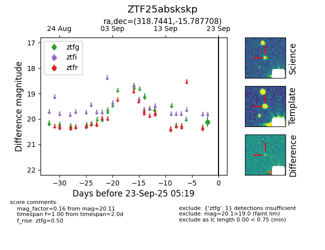

FINK: ZTF25abskskp
Lasair: ZTF25abskskp
ALeRCE: ZTF25abskskp
ZTF25abskskp (ztf,fink)
equatorial (ra, dec) = (318.7441,-15.78771)
galactic (l, b) = (34.0380,-38.75954)

last ztfg=20.11
1 ztfg detections